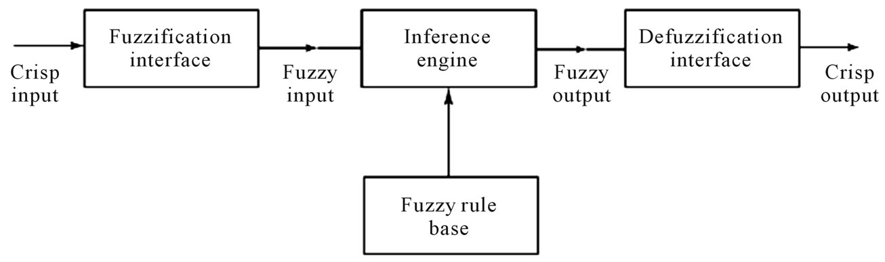
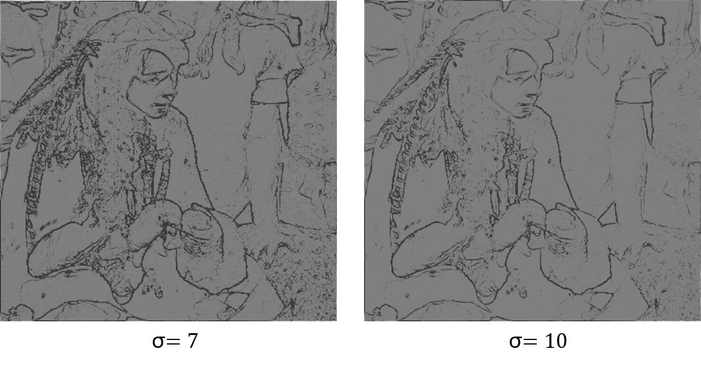
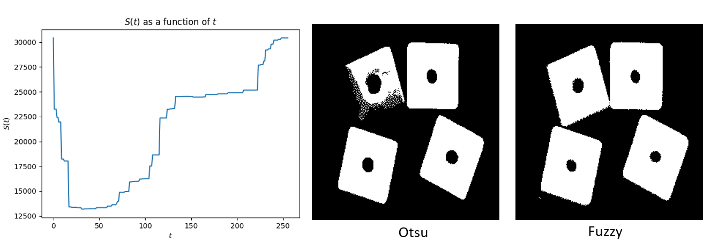

Fuzzy logic theory
Contents
8.2. Fuzzy logic theory#
This is a large section, we only discuss rule-based techniques in this blog.
More should refer to this book: Fuzzy techniques in image processing.
Fuzzy set#
A fuzzy set \(A \subset Z\) is characterized by a membership function \(\mu_{A}(z)\).
(e.g. Z is all men; A is yong men).A fuzzy set is an ordered pair: \(A_{fuzzy} = \{(z, \mu_{A}(z)) \mid z \in Z, \mu_{A}(z) \in [0,1] \}\)
Membership function \(\mu_{A}(z)\) quantifies the degree of \(z\) in \(A\).
Fuzzy Rule Base and Inference Engine#
Approximate an unknown I/O mapping by inference from a set of fuzzy rules (IF-THEN).
 General scheme of a fuzzy inference system
General Steps#
Fuzzify the inputs
map membership value([0,1]) to each pixel by the membership function.Fuzzy logical operations
combine the outputs of all IF operators to a single value using the appropriate logic.Apply an implication method
clip each fuzzy output of according to the result of step2.Aggregation method to the clipped output fuzzy sets
combine the output of each fuzzy rule.Defuzzify the final output fuzzy set
e.g. center of gravity.
Contrast enhancement#

{kind=link}
Fig. 8.1 Look at gray hair and crossed fingers#
Boundary extraction#
Step 1: Define input and output membership functions
 Step 2-4: rule 1 and overall membership function
Step 2-4: rule 1 and overall membership function
mu1 = np.minimum(min(mu_zero_d2, mu_zero_d6), mu_white) # Step 2-3
mu = np.maximum.reduce([mu1, mu2, mu3, mu4, mu5]) # Step 4

Step5: centroid of gravity

Thresholding#
OTSU (code implementation)#
Minimize the intra-class variance
Or Maximize the inter-class variance
t - variant threshold, dividing the image intensity pixels into two classes - background and foreground;
\(w_{0,1}(t)\) - class probability;
\(\mu_{0,1}(t)\) - mean intensity of the class;
Fuzzy method#
For each tested threshold, a point is assigned to the obj/bckgrnd with the membership 0.5~1.0
The closer the pixel intensity to the mean of the region, the higher its membership to that region
The optimal threshold → the entropy in the image is minimized
Average gray level for background \(\mu_{0}\) and for object \(\mu_{1}\)
Membership function of the object/background region:
Entropy
